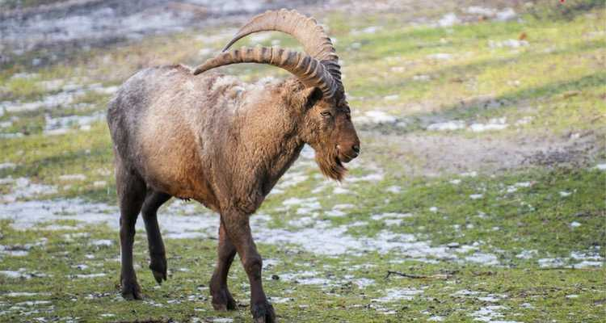

Wildlife Zoo and Parks
Guindy National Park

Mukurthi National Park

Vandalur Zoo

Vedanthangal Bird Santuary

About Us
Welcome to Tamilnadu Tales!
Your window to the soul of Tamilnadu's enchanting tourist places. Explore with us as we showcase the beauty, history, and charm of each destination, creating a visual feast for the travel enthusiast in you.